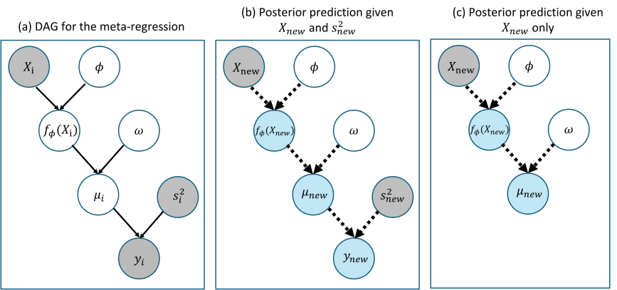

Tutorials / Concept
Statefulness is the coding paradigm that lets AI4BayesCode take blocks built separately and run them together as one sampler. This explains what it means and why it matters.
A standard MCMC sampler is a closed loop. You give it your data, tell it how many iterations to run, and it runs to the end on its own. It assumes the quantities it conditions on are fixed. That holds when the sampler is the whole model. But when you place a sampler inside a larger model, those quantities are no longer fixed. Other blocks update them on every iteration. A regression with missing predictors has to impute those predictors before fitting the regression at each iteration, or a model's response might be a latent variable that another sampling component re-samples each iteration.
A standard sampler cannot take a changed input. The only way to give it the updated values is to reinitialize it every iteration, and reinitializing discards its internal state. Take BART for example. Its state is the ensemble of trees it has built, and it works by updating one tree at a time, conditional on the others. If BART sits inside a larger model and BART's response is updated each iteration, reinitializing it every iteration throws away the ensemble, so it can never carry out its one-tree-at-a-time updates.
A stateful block solves this. It keeps its internal state across iterations. On each iteration it receives the updated values from the other sampling component outside this block, advances its own parameters by one step, and returns its new state, without reinitializing. Three functions carry it out: set_current receives the updated inputs from outside blocks, step advances one iteration, and get_current returns its current values to other blocks.
To put that precisely, write \(\Theta\) for a block's own parameters and \(\mathcal{D}\) for the quantities it conditions on. A standard sampler holds \(\mathcal{D}\) fixed and just advances,
\[ (\Theta^{(t)},\, \mathcal{D}) \;\longrightarrow\; (\Theta^{(t+1)},\, \mathcal{D}), \]
while a stateful block takes the update to \(\mathcal{D}\) first, then advances:
\[ (\Theta^{(t)},\, \mathcal{D}^{(t)}) \;\longrightarrow\; (\Theta^{(t)},\, \mathcal{D}^{(t+1)}) \;\longrightarrow\; (\Theta^{(t+1)},\, \mathcal{D}^{(t+1)}). \]
The first arrow is set_current, the second is step. Because every block works this way, blocks built separately drop into one larger sampler and keep running, instead of reinitializing from scratch.
A meta-regression combines effect estimates from \(K\) studies. Study \(i\) reports an effect \(y_i\) with a known variance \(s_i^2\), and \(X_i\) holds its study-level covariates. The model is
\[ y_i \mid f_\phi, \omega, X_i, s_i^2 \;\sim\; \mathcal{N}\!\left(f_\phi(X_i),\; \omega^2 + s_i^2\right), \qquad \omega \sim \mathcal{C}^{+}(0, 1), \]
where \(\omega^2\) is the between-study variance and \(f_\phi\) is a regression function with parameters \(\phi\). The function \(f_\phi\) can be any regression model, including a newly developed one that has no meta-regression implementation of its own.
The variance \(\omega^2 + s_i^2\) differs across studies, so a standard regression sampler cannot fit this form directly. Introducing a latent effect \(\mu_i\) for each study gives an equivalent model:
\[ y_i \mid \mu_i, s_i^2 \;\sim\; \mathcal{N}(\mu_i,\, s_i^2), \qquad \mu_i \mid f_\phi, \omega, X_i \;\sim\; \mathcal{N}\!\left(f_\phi(X_i),\, \omega^2\right). \]
Now \(\mu_i\) follows an ordinary regression with a single residual variance \(\omega^2\), which is the form a regression sampler expects. Panel (a) of the figure below shows the model as a DAG.
Each MCMC iteration has two parts. First, draw each latent effect from its conditional distribution, which is normal:
\[ \mu_i \mid y_i, f_\phi, \omega \;\sim\; \mathcal{N}\!\left(v_i\Big(\tfrac{y_i}{s_i^2} + \tfrac{f_\phi(X_i)}{\omega^2}\Big),\; v_i\right), \qquad v_i = \Big(\tfrac{1}{s_i^2} + \tfrac{1}{\omega^2}\Big)^{-1}. \]
Second, update \(\phi\) and \(\omega\) by fitting the regression with \(\mu_i^{(t)}\) as the working response and \(X_i\) as the predictors. The response of this regression changes on every iteration.
A standard regression sampler cannot accept the new response without being reinitialized, so it would start a new sampling run each iteration instead of continuing from its current state. When \(f_\phi\) is BART, the state is the tree ensemble, and each tree is updated conditional on the current fit of the others. Reinitializing replaces that ensemble with a new starting one, so even the first tree update conditions on the starting ensemble rather than the current fit.
A stateful block keeps its trees. At iteration \(t\) it receives \(\mu_i^{(t)}\) through set_current, updates \(\phi\) and \(\omega\) through step, and returns \(f_\phi(X_i)\) and \(\omega\) through get_current for the next draw of \(\mu_i\).
In R
Here \(f_\phi\) is BART, through the built-in BartNoise sampler. It fits \(\mu_i \sim \mathcal{N}(f(X_i), \sigma^2)\), so its \(\sigma\) is \(\omega\). The outer loop draws \(\mu_i\), and the BART sampler updates the trees and \(\omega\).
library(AI4BayesCode)
ai4bayescode_example("BartNoise") # BART regression: mu ~ N(f(X), sigma^2)
# simulated meta-analysis: K studies with known within-study variances s2
set.seed(1)
K <- 80
X <- matrix(runif(K * 2), K, 2)
f <- sin(pi * X[, 1]) + X[, 2] # true regression function
mu <- f + rnorm(K, 0, 0.3) # true study effects, omega = 0.3
s2 <- runif(K, 0.02, 0.2) # known within-study variances
y <- rnorm(K, mu, sqrt(s2)) # observed effects
# the phi block: BART, started with the observed effects as its response
phi <- new(BartNoise, X, y, ntrees = 50L, rng_seed = 1L)
n_iter <- 6000
omega <- numeric(n_iter)
f_draw <- matrix(NA, n_iter, K)
for (t in 1:n_iter) {
cur <- phi$get_current() # f(X_i) and omega from the last step
f_t <- drop(cur$f_bart)
w2 <- drop(cur$sigma)^2
# mu_i | y_i, f(X_i), omega
v <- 1 / (1 / s2 + 1 / w2)
mu_t <- rnorm(K, v * (y / s2 + f_t / w2), sqrt(v))
phi$set_current(list(y = mu_t)) # new working response, trees kept
phi$step() # one sweep of the trees, then omega
cur <- phi$get_current()
omega[t] <- drop(cur$sigma)
f_draw[t, ] <- drop(cur$f_bart)
}
keep <- 3001:n_iter
quantile(omega[keep], c(0.05, 0.5, 0.95)) # between-study SD
cor(colMeans(f_draw[keep, ]), f) # fitted vs true regression function
The BART sampler is never rebuilt inside the loop. It was written for a standalone regression, and the three calls are all it takes to place it inside the meta-regression. In this sketch \(\omega\) takes BartNoise’s default prior on \(\sigma\), the calibrated inverse-gamma prior of BART, rather than the half-Cauchy prior above. To use the half-Cauchy prior, describe the regression with that prior and generate its sampler.
Every sampler AI4BayesCode generates keeps the DAG of its model, as in panel (a). The DAG records which quantities are observed, which are latent or parameters, and which depend on which. predict_at uses it to decide what can be predicted from the inputs you give it.
Prediction starts from the nodes with no parents, including any new inputs you supply. A node becomes predictable once all of its parents are known, whether from fitted parameters, from your inputs, or from nodes already predicted. Repeating this step carries the prediction down the DAG.

In panel (b), both \(X_{new}\) and \(s^2_{new}\) are given, so the prediction runs from \(f_\phi(X_{new})\) to \(\mu_{new}\) and then to \(y_{new}\). In panel (c), only \(X_{new}\) is given. The prediction still reaches \(f_\phi(X_{new})\) and \(\mu_{new}\), but it stops before \(y_{new}\), because \(s^2_{new}\) is unknown. Given only \(s^2_{new}\), nothing can be predicted.
The same rule covers prediction with no new inputs at all, such as density estimation: the prediction starts from the parameter nodes alone and runs through the whole DAG. When the sampler keeps its history, predict_at returns a prediction for every retained draw. Otherwise it uses the current draw only.